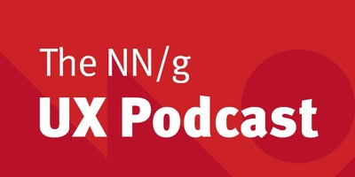
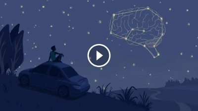
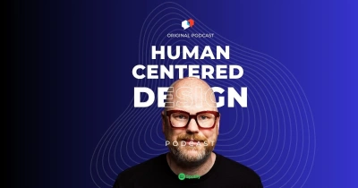
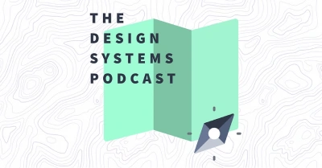
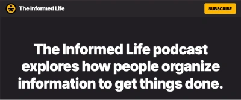
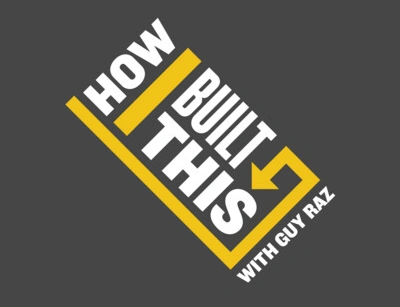
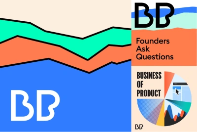
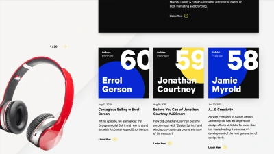
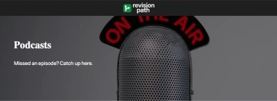

Podcasts
NN/g UX Podcast

A monthly podcast on user experience research, design, strategy, and professions. Including interviews with industry experts, discussions on pressing UX topics, and tips for building great user experiences.
Hidden Brain

This podcast explores the unconscious patterns that drive human behaviour and the questions that lie at the heart of our complex and changing world.
This is HCD

The Human Centered Design Podcast is about educating and empowering people with the value of human-centered design. Episodes include thought leaders from various design and product disciplines to discuss how we can design for the best human centered experiences.
The design systems podcast

The Design Systems Podcast interviews industry leaders and product makers to share best practices and explore the areas where design and development come together.
The informed life

The Informed Life podcast explores how people organise information to get things done. Learn how to better design, build, and use information systems.
How I built this

Interviews the world’s best-known entrepreneurs to learn how they built their iconic brands. In each episode, founders share intimate moments of doubt and failure, and insights on their eventual success. How I Built This is a master-class on innovation, creativity, leadership and how to navigate challenges of all kinds.
Better product

Hear the stories of industry-leading companies whose products have a soul, a mission, and a vision. Through engaging conversations with CEO’s, entrepreneurs, and innovators. The podcast explores what it takes to build better products.
The Futur podcast

This podcast deals with the overlap between design, marketing, and business. Leading professionals in design, technology, marketing, business, philosophy, and personal development talk about what drives them and what we all can learn from it.
Revision path

An award-winning platform that showcases Black designers, artists, developers, and digital creatives from all over the world. Through weekly in-depth interviews on our podcast, you’ll learn about their work, their goals, and what inspires them as creative individuals.
Sustainable UX podcast
The podcast for designers, UX people and digital product builders who want to make an impact for a sustainable future.
The Clearleft podcast
A podcast investigating the process of design through talks with peers, clients and customers.